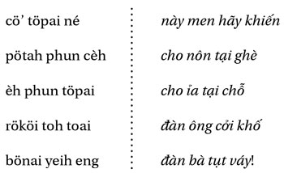
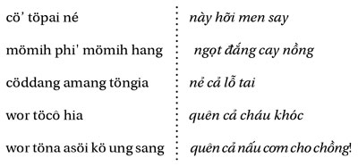
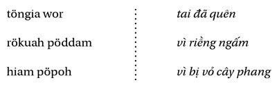

Chương 7
Thoạt tiên là một giấc mơ. Tôi mơ thấy bà mẹ đã quá cố của tôi; bà đưa cho tôi một con dao nứa và cái đáy quả bầu. Từ ngày đó tôi biết đỡ đẻ, và biết cả xoa bóp, chữa các bệnh khác nhau... (Tl. 12. 56).
Một bà già đã kể về thiên hướng và việc bà vào nghề bà đỡ như vậy. Bà tên là Bà-Cỏ 1 ( ya’ gru’ , tên một loại cây thuộc họ cỏ roi ngựa, ở đây là tên đứa cháu bà; thường người ta gọi tên một người nào đó theo tên con hay cháu như vậy. Còn tên những bà già được gợi lên trong các lời cầu khấn và các nhân vật huyền thoại thì không gọi như vậy, như trong tên ya’ pum, pum là tên riêng của bà già, Rú; tuy nhiên người ta cũng có thể gọi bà theo kiểu trên là ya’ Drit , bà-của-Drit). Chiếc dao nứa bà nhắc đến chính là miếng nứa mài sắc dùng để cắt cuống rốn; cái đáy bầu dùng để hứng lấy cái nhau, sau đó đem chôn.
1 Nguyên văn: grand-mère-de-verveine. Verveine là Cỏ roi ngựa. Chúng tôi dịch tắt là Bà-Cỏ-ND.
Bà-Cỏ, mà người ta khen là có khả năng phát hiện thai chỉ mới một tháng tuổi, thậm chí còn phân biệt được trai hay gái, chẳng ai giỏi bằng bà trong thuật chữa bệnh đau đầu bằng cách giật từng nhúm tóc, cứ như là muốn rứt cả da đầu ra mỗi lần lại phát ra một tiếng tách nhỏ. Cũng như phần lớn các bà đỡ Giarai, bà còn biết xoa bóp và nắn xương, với một sự hiểu biết rất hiệu lực về giải phẫu học. Là những người đàn bà sành sõi, các bà được gọi đến để truyền sự hiểu biết truyền thống cho đứa trẻ sơ sinh; hiểu biết rành rọt về cơ thể con người, các bà có thể nói về văn hóa, thông mở “lỗ tai”, vốn được coi là trí khôn là ký ức của con người.
Nhiều người trong số các bà hiểu biết về dược thảo, nhưng lại ít khi dùng đến - đấy là nghề riêng của các bà thầy thuốc, số lượng ít hơn các bà đỡ. Để làm lành chỗ rốn của đứa bé, các bà dùng một trong hai cách: bắt một con nhện, bóp sống cho nát ra, ép nước vào vết thương; hay bôi tro tàn thuốc vào đấy.
Không phải là “chuyên nghiệp”, và không phải được mộng báo thì mới thành chuyên nghiệp, mọi người đàn bà Giarai đều có thể giúp một người sản phụ, cũng như họ có thể, ít nhiều khéo tay và thành công, dệt vải có hoa văn tinh tế hay làm rượu cần. Và việc đó chỉ có đàn bà biết; đàn ông không bao giờ mó tay đến.
Rượu cần (töpai) được làm bằng những viên gạo hay ngô nấu chín, trộn với những loại thảo mộc đặc biệt, tất cả nhào với cám và phơi cho khô một thời gian trên nong; những viên cơm hay ngô đó sẽ lên men trong đáy ghè bịt kín, có tên gọi là töpöi , có thể nguyên là cùng một từ với töpai . Các loài thảo mộc dùng để “kích thích” việc chế biến (ta sẽ thấy sự kích thích đó là theo hướng nào, ngoài việc lên men) được giã (sô’) bằng cối, băm nhỏ ( poh ), xát ( oa ’), nhào ( man ) với bột gạo hay ngô kia.
Các loại thảo mộc thêm vào đó (jörao töpöi “độc dược/ men rượu”, jörao là chỉ chung các loài dược thảo, các sự pha chế “thần bí”, thuốc độc) được chọn trong các loại sau đây: Helicteres, Canthium, Leea, Plumbago, Aporosa, Pericampilus, Strychnos, Sida, Lygodium, Muronia, Cyperus, cộng với một Sterculiacée, một Zingibéracée, một Dioscoréacée và ba tên khác không xác định được. Tất cả các dược thảo này đều mọc hoang trong rừng thưa... đối với những ai biết tìm ra chúng. Tôi đã học được cách tìm ra và nhận dạng được chúng nhờ sự tinh thông và tin cậy của một bà già có một chút là thầy thuốc, một chút phù thủy, và chắc chắn là bà đỡ giỏi. Tôi đã mang chúng về làng (nhất là các loại cây có củ) và trồng trong vườn cây thuốc của tôi; người ta bảo tôi rằng lúc đó chúng đã mất hết tác dụng; phải lấy trong rừng thì chúng mới có hiệu lực. Nhưng, chẳng có ý định đầu độc ai, tôi chỉ muốn xem chúng nảy nở để có thể nhận diện ra chúng. Một số chỉ tạo ra đường, cần thiết cho sự lên men; những thứ khác, có thể sử dụng làm độc dược, có những tác dụng khác nhau: làm mê mẩn, gây kích thích, nhuận tràng, lợi tiểu, gây tê, không kể một loại thuốc độc: loại dioscorine.
Các hiệu quả có thể nhận ra rất nhanh nơi người uống. Rượu cần, tự nó, có nồng độ cồn yếu, không đủ để say; nhưng khi nó chứa những thứ độc dược kia, trộn lẫn vào nhau càng “bùng nổ”, thì người chai chì nhất cũng không đứng vững nổi, không còn tự kiểm soát được, trước khi rơi vào trạng thái ngây độn hay mê mẩn, như những người bị nàng Thảo “lấy mất sinh khí” (Hj. 110). Các bà sành cái món chế biến này mô tả cái phù phép ấy như sau: töpöi , trộn với jörao , được ủ cho ngủ yên ba đêm trong một chiếc nong; rồi được mang nhẹ nhàng đến gần cửa nhà. Bà làm men khe khẽ đánh thức nó dậy:

Men được dựng lên (ru’) choàng dậy (tögu) như sau một giấc ngủ say. Người đàn bà tiếp tục đánh thức nó (rau) bằng một lời khấn:

Men được báo những hiệu quả nó phải gây ra. Người đàn bà vẫn tiếp tục lời khấn:

Tức là đã mất đi cả bản nguyên và vợ chồng chẳng còn nhận được ra nhau; và đôi khi quả đã diễn ra như vậy thật, khố váy tuột bỏ hết, các thân hình sáp vào nhau.

“Nẻ cả lỗ tai” (thông hiểu và trí nhớ) đối lập với “mở lỗ tai” trong lễ thổi tai; lúc đó người đàn ông phải quên nhưng men phải nhớ, người đàn bà dạy cho men nhớ những hiệu quả nó phải gây ra.
Khấn vái xong, người đàn bà đi vòng quanh chiếc nong, hay quay tròn chiếc nong, để cho rượu khiến người ta đến “chóng mặt” ( hwing ). Các bà vừa trộn men vừa nói: “Rượu làm say, thì người ta sẽ khen chúng tôi, rượu nhạt thì người ta sẽ chửi chúng tôi”.
Trong một lời hòa giải, để chữa lỗi cho những lời khiếm nhã của một người đang say, ta nghe:

Riềng và vỏ cây là những thứ thảo mộc độc dược trộn vào men.
Cũng chính người đàn bà đã truyền vào bộ nhớ của đứa bé sơ sinh những gì nó không được quên đó, nay lại xúi người đàn ông làm điều ngược lại: “quên đi” ( wor ), đảo lộn “cái nhớ” ( hödor ), và lại dùng một thứ thảo mộc gần với gừng đã được dùng trong “lễ mở tai” (hai loại, có tác dụng ngược nhau). Giải thích điều đó như thế nào? Trước hết, người đàn bà uống rượu ít say hơn đàn ông nhiều, có thể do họ thân tình-đồng mưu với thảo mộc hơn; bà luôn luôn là ký ức và hiểu biết, ở đây được truyền sang cho men. Sau nữa, thời gian uống rượu là một thời gian ngoại lệ; trong một xã hội mà lý trí chủ yếu là ghi nhớ, thì sự thư giãn sâu xa nhất là lãng quên. Jörao töpöi là thuốc quên, trong một khoảng ngắn, ở đó mọi trách nhiệm được trút bỏ hết; đến hôm sau mọi sự đều được xóa hết. Luật chơi đòi hỏi người ta phải cùng say chung; như vậy không còn người làm chứng tỉnh táo nữa. Ai cũng đồng lõa, hài hước và khoan dung. Và các bà được khen vì đã làm một công việc tốt đẹp đến thế.
Ông già bố-cậu-Tré kể câu chuyện say tưởng tượng như sau:
Anh chàng ấy đi uống ở nhà bạn về, say mèm, một mình, trong đêm.
“Sợ gì chứ? Gặp một con voi hay một con tê giác, ta sẽ đánh tuốt!” Anh hét tướng câu đó lên; khi say người ta chẳng còn sợ gì cả. Một con voi rừng hiện ra: “Ngươi nói gì đấy? Ngươi muốn đánh ta à? Thì đánh! - Ôi không, thưa ông, tôi đâu dám; tôi chỉ say rượu thôi mà - Say gì? Rượu cần ạ! - Ồ ta muốn nếm thử xem! - Xin mời ông đến nhà tôi ngày rằm, tôi sẽ đãi ông.”
Về nhà, anh ta bảo vợ làm thật nhiều ghè rượu, đủ loại ghè lớn nhỏ, chật cả nhà. Rằm, voi đến. “Nó đến đấy, sắp sẵn rượu ra đi!” Anh ta hút rượu ra các chậu to tướng. Rượu tôi đã thưa với ông đây, xin mời!” Voi hút rượu, sạch hết các chậu. Say mèm, nó rống lên: “Một trăm người, một nghìn người đến đây, ta cũng lấy ngà đâm chết hết!”. Và nó húc tất cả cây cối chung quanh. Sáng hôm sau, mọi việc qua đi. Người đàn ông bảo voi: “Hôm qua ông nói những gì vậy? - A, nhóc con, ngươi có lý. Ta sẽ không ăn thịt ngươi đâu, cả con cháu dòng dõi ngươi nữa. Ta chẳng thèm để ý đến những lời nói của một người Giarai say; vì bây giờ ta biết rồi, ta đã uống rượu của ngươi rồi mà!” (Tl. 1a. 67).
Và bây giờ, một câu chuyện có thật: Tuet ở làng Blany là một tay bợm rượu. Anh ta ngừng uống một thời gian lâu. Một tối nọ, anh ta lại uống; tức khắc anh ta cư xử khác hẳn, trước nay chưa bao giờ như vậy. Tâm thần anh ta bất định; anh ta thấy trong người như có một sức mạnh giục anh muốn chạy trốn ( nyu pödduai , nó khiến người ta chạy trốn), trốn vào rừng. Để cưỡng lại sức mạnh đó, cái “hắn” vô danh kia, anh ta tự trói mình vào nhà, như Ulysses tự trói mình vào cột buồm. Từng lúc anh ta bị mất trí và anh ta biết điều đó. Quên đi, trong thời gian một bữa rượu, là chuyện thường ở Giarai; vượt ra ngoài thời gian đó là điên loạn. Thuốc mê này thật nguy hiểm, khi thế quân bình mong manh, hay là cũng cứ liều... Từ người đàn bà phù thủy, chế ra rượu cần, đến cô tiên có phép mê chờ anh ta trong rừng, người đàn ông yếu bóng vía khó lòng đứng vững được; phải là thầy pháp hay là người đi săn thì mới mong gặp vận may.

Ai là người đầu tiên, mụ “phù thủy” đầu tiên và người đàn bà đầu tiên mà ta phải biết? Trong nền văn minh Do Thái-Kitô - và những nơi khác nữa - đấy chỉ có thể là Eva, tức là người Đàn Bà, người hái lượm đầu tiên, bởi vì nàng muốn được hiểu biết, và, do vậy, là người nữ khai tâm đầu tiên. Là người nữ chăn cừu hay là hoàng hậu (xem Hoàng hậu Đêm tối trong Cây sáo thần , bị sự sùng bái Lý trí phái nam, tam điểm và ghét đàn bà đè nát) nàng gìn giữ những sự vật được che giấu, mặt trái của trật tự nam giới, phía rễ và củ, dưới đất; nàng là người nắm giữ một “hiểu biết” khác - nhưng không phải ở người Giarai, nơi chỉ có một sự hiểu biết, sự hiểu biết đến từ những người đàn bà, những người đàn bà hiểu biết cỏ cây.
Tôi đã nhiều lần đi khảo sát thảo mộc cùng với những người đàn ông Giarai; thông thường họ có thể nói cho tôi biết tên các loài tìm được, nhưng, thường chỉ những người đàn bà mới chỉ được cho tôi công dụng của chúng - từ những thứ làm thức ăn, làm thuốc, đến thuốc mê, thuốc độc hay bùa ngải - trong khi đó (nhất là những người đi săn) sành hơn trong việc sử dụng các sản phẩm có nguồn gốc động vật, để chữa bệnh hay làm thuốc độc.
Vì thế, nhờ các bà hay thích những kẻ khù khờ mà tôi được biết một loại Curcuma chữa mụn nhọt, một loại Cassia chữa lác, một loại Leea rubra (gọi là “máu mũi”) chữa chảy máu mũi, một loại Amaryllis giúp người ta đẻ dễ, trong khi một dạng cỏ nào đó lại gây sẩy thai; một loại Artocarpus tẩy giun đũa, một loại huệ tây dùng làm thuốc an thần cho trẻ con và những người lớn hay cáu gắt. Trong các loài kích dục, một loại cỏ giúp các cậu trai trẻ thành công trong tình trường, một số loại khác có thể khiến người ta đến mức không sao cưỡng lại được mình - chúng phải được một bàn tay đàn bà pha chế bằng cách trộn thứ cây đó với thuốc lá; con trai con gái vô tình hút phải thứ thuốc đó thì không thể rời bỏ nhau được nữa, dù là anh em ruột, chuyện đó không chỉ xảy ra trong huyền thoại ở đấy bùa yêu cũng là do đàn bà chế ra. Một giống Curcuma trừ được bùa thư; một loại cỏ khiến ta có thể tàng hình, có lợi cho người đi săn và kẻ ăn trộm.
Đương nhiên, tất cả các thứ thuốc nhuộm bông vải để dệt đều do đàn bà hái lượm và chế biến: cây Indigo để chế tất cả các sắc thái xanh, Morinda để pha màu đỏ, Curcuma pha màu vàng; nhựa cây họ dầu dùng để hãm màu.
Về chuyện thuốc độc, người Giarai rất kín tiếng cả trong việc chế biến lẫn sử dụng; có lời xì xầm, không chỉ trong các tộc người láng giềng và xưa là thù địch, mà cả trong người Giarai vẫn khoe rằng họ biết đầu độc. Tôi chưa gặp một trường hợp nào; người ta có kể cho tôi một ít loài thảo mộc, đặc biệt là loài củ mài dại chứa chất dioscorine, do các bà sử dụng để làm chết người, tôi chỉ được biết qua huyền thoại. Hãy thêm vào đó lối chế biến một loại tro đốt từ mụt măng khô, trộn với râu hổ; trong trường hợp này, đàn bà chẳng có liên quan gì, chính các ông bỏ loại tro đó vào thức ăn - hay các ông khoe là mình giỏi làm chuyện đó; kỳ thực cái thứ họ chế đó là một hợp chất hoàng nàn dùng làm thuốc độc đi săn. Phải chăng, ở đây nữa, đàn ông lại phải tố cáo đàn bà là phù thủy và kẻ đầu độc? Nhưng các bà rất biết cách đáp trả. Bố-thằng-Sim đến nhà một bà già, bà mời ông ta uống rượu; khi bà đưa cần rượu cho ông, ông từ chối: “Tôi không uống rượu của bà đâu, có thuốc độc trong ấy” (jörao; trong ngữ cảnh ở đây và theo cái giọng nói đó, thì chẳng phải là chuyện thuốc mê thông thường). Một lúc sau, ông ta mời bà hút thuốc. “Tôi chẳng chơi đâu, có thuốc độc trong ấy!” Thời tôi mới đến vùng Giarai, một trong những bài học đầu tiên tôi nhận được là lời cảnh báo: “Khi vào một gia đình anh không quen và người ta mời cơm anh [bao giờ cũng do đàn bà nấu], thì chỉ ăn ở chính giữa chậu thôi, đừng bao giờ ăn phần ngoài rìa, ở đấy có thể có thuốc độc!” Tôi chẳng bao giờ làm theo, nhưng tôi đã góp phần phổ biến cái truyền thuyết ấy, nó đã bảo vệ người Giarai chống quá nhiều các vị khách quấy rầy.
Một người đi săn già kể về nguồn gốc của jörao kroa “thuốc độc rùa” (Oxalidacées?):
Một người bắt được một con rùa trong rừng. Anh ta tìm một sợi dây leo để cột và kéo con vật đi. Anh thấy một sợi dây leo dưới chân, bứt lấy, cột con rùa. Lúc đó anh thấy giòi bọ lúc nhúc và ngửi thấy mùi thối rữa; con rùa đang sống bỗng rữa ra. Anh ngạc nhiên, vứt con rùa đi, nhưng giữ lấy cái dây. Về nhà, anh đem sợi dây kỳ lạ ấy buộc con gà; lại giòi bọ và thối rữa. Anh đốt cái dây, thu lấy tro. Khi muốn trừ khử một người nào, anh trộn tro ấy vào cơm, rượu cần, hay thuốc lá. Hễ anh chàng không được ưa kia ăn, uống hay hút phải, thì tức khắc thối rữa ra ngay (Tl. 1b. 67).
Hoang đường hay không, thì trong câu chuyện người đánh thuốc độc này cũng không hề có người đàn bà. Là người đi săn hay người chiến binh, người đàn ông gây ra cái chết. Là người đỡ đẻ hay người chữa bệnh, người đàn bà chăm nom; bà là sự sống.
Chúng ta ở nhà mẹ-thằng-Oi’, một người đàn bà chữa bệnh ở làng Biah; nhà bà chật cứng người phần lớn là đàn bà, đến nhờ xoa bóp. Bà kể nhờ đâu bà có được khả năng xoa bóp đó:
(giọng tâm sự) Thoạt đầu, là một giấc mơ, vâng, một giấc mơ...
(rất thầm thì) Tôi thấy - thần núi Mô’ - bà cầm một con dao nứa và một trái bầu, đưa cho tôi - rồi bà cho tôi xem các dược liệu, các loài thảo mộc - tôi nhận ra được cả - Khi thức dậy, tôi cúng tạ thần: trâu đực và bảy ché rượu cần.
(giọng trò chuyện) Sau chuyện đó, khi có người đau ốm, tôi cố xoa bóp cho họ; có người sắp đẻ, tôi giúp họ. Từ đó người ta đến nhờ tôi, từ khắp nơi, từ Cheoreo cho đến sông Sol...
(tiếng nói trong cử tọa) - Cả tận Pleiku kia! Bà chữa cho mọi người, ngay cả người Kinh cũng nhờ bà. Cũng giống như ba-cô-Cỏ ở Cheoreo, có thể nói người Kinh nuôi sống bà... [quả là phụ nữ Kinh cũng tin các bà đỡ Giarai, nhờ các bà chăm nom, và thậm chí còn nhờ chữa bệnh bằng bùa ngải].
(bà lang tiếp tục) Các loại thảo mộc tôi dùng... [bà kể tên ba loại củ, dùng cho đàn bà có thai]. Các loại thân gỗ tôi nhận ra chúng bằng cách xem lá, hình trái xoan hay tròn, có lông hay nhẵn. Tôi biết cách giúp đẻ dễ hay phá thai, bằng các loại thân rễ, đực hay cái; và tôi xoa bóp bụng, để phá thai, tôi xoa theo cách cuộn, véo, lăn da bụng; để cho đứa bé chóng ra, tôi xoa đều, cho da căng ra [hai ngón cái sát vào nhau và giãn ra]. Tôi cho uống một liều các loại củ (Tl. 7. 67).
Đây là Htlat, một người đỡ đẻ-chữa bệnh trẻ:
Lúc tôi còn bé, tôi nằm mơ thấy một con rắn to tướng. Một vị thần muốn tôi chui vào trong con rắn: “hồn” tôi sợ quá [böngat, phần “hồn” của cái tôi, nó thoát ra khỏi cơ thể, đi lang thang trong khi con người ngủ, do đó mà ta nằm mơ] . Tôi chui vào, luồn qua con rắn từ đầu đến đuôi; nó dựng ngược lên, tôi lại luồn qua nó theo chiều ngược lại; lọt ra ngoài, tôi ngã xuống đất. Thức dậy, tôi khóc. Một tháng, hai tháng sau, tôi lại nằm mơ; tôi thấy một vị thần đưa cho tôi một trái bầu và một con dao nứa, muốn tôi giúp các bà sinh nở.
Và tôi cũng mơ thấy một vị thần cho tôi một cây nến để tôi soi cho những người ốm. Sáng dậy, tôi khóc. Bố mẹ tôi hỏi có chuyện gì; tôi xấu hổ, lặng thinh. Bố mẹ cứ hỏi mãi, cuối cùng tôi nói hết. Sau giấc mơ đó, tôi bị ốm gần chết. Bố mẹ tôi bói bằng cách bổ quả cà, hai nửa quả cà rơi ra, một nửa sấp, một nửa ngửa, khi bố mẹ hỏi: Có phải ốm vì giấc mơ không? Quả đúng như vậy. Bố mẹ cúng một con lợn và ba ghè rượu. Cha tôi khấn: “Hỡi các thần, thần Du thần Dei, khiến con người ngủ ban ngày và mơ ban đêm, xin làm cho con gái tôi khỏi bệnh, rồi nó sẽ làm theo tất cả những gì các thần sai bảo!” Tôi khỏi bệnh ngay. Từ đó tôi đi giúp các bà sinh đẻ, tôi chữa bệnh cho mọi người. Khi không thành công, tôi lại nhờ các thần, tôi làm một lễ cúng tạ” (Tl. 9a. 64).
Bà-thằng-Yok, bà lang ở Plöi Tuan (plöi: làng) kể chuyện bà đã trở thành pöjau bbuai, bà lang thấu thị như thế nào:
Thoạt tiên, tôi thấy một vị thần cầm một cây nến đang cháy; thần soi cho tôi, rồi biến mất. Rồi, vẫn trong mơ, tôi lại thấy vị thần ấy cầm bảy ngọn nến bên phải và bảy ngọn nến bên trái. Tỉnh dậy, tôi đi đến nhà bà cô tôi ở Plöi King Pong; tôi hỏi cô như thế nghĩa là thế nào. Cô bảo: “Bảy cây nến, trong bảy năm con sẽ chết.”
Sợ quá, tôi cố làm cho mình thành ra ô uế trước mắt các thần. Mỗi khi ở đâu có người chết, tôi lại đến giúp khiêng xác [thi hài người chết thông thường được bốn người đàn ông khiêng trên vai đến nghĩa trang, tại đấy mới đặt vào quan tài; thi hài được khiêng đi nhiều ngày sau khi chết] bằng cách nâng cái xác lên trên đầu tôi, để cho nước từ thi thể rữa ra chảy xuống cả trên vai, trên ngực tôi. Tôi làm như vậy bảy lần; rồi tôi nghe thấy trong mơ: “Ta không ở với ngươi nữa, vì ngươi đã ô uế lắm. Từ nay về sau ngươi chỉ cần xoa bóp bụng và cơ bắp sai lệch là ngươi sẽ chữa được các chứng bong gân trật khớp, ngươi sẽ giúp đàn bà sinh nở, ngươi sẽ cho các loài dược thảo.”
Từ đó những người bị trật hay bong gân được đưa đến chỗ tôi; tôi chỉ cần kéo tay hay chân họ là khỏi ngay.
Lúc mơ thấy giấc mơ đầu tiên, tôi còn là một cô gái trẻ. Bây giờ tôi nhìn thấy cả các hnim [là biểu hiện vật chất của căn bệnh, dưới dạng một viên sỏi, một mảnh xương, một cái hạt, hay vật thể khác, nằm trong cơ thể người bệnh; người thầy pháp loại bỏ nó ra bằng cách ấn hay hút], nhưng tôi không biết cách loại bỏ nó ra. Vị thần bảo tôi có thể đạt được đến trình độ đó nếu tôi cúng một con lợn thiến và bảy ghè rượu.
Đỡ đẻ thì tôi dùng các loại thảo mộc [bà kể bốn loại]; tôi lấy rễ, sắc nước cho uống, lấy chăn đắp kín người bệnh để cho hơi thuốc tỏa thấm khắp cơ thể (Tl. 6b. 67).
Một người nghe (đúng là người Giarai) khi nghe câu chuyện đời này đã ngạc nhiên sao bà lang này không giấu tên các loại cây đặc biệt bà đã sử dụng. Quả là các bà lang này không tiết lộ bí mật của mình cho mọi người; thông thường họ không đưa loại cây họ sử dụng ra, là loại cây bình thường ai cũng có thể hái được. Như cây dang dit (Bauhinia acuminata), chẳng hạn, bà lang cẩn thận bóc lấy lớp vỏ (có thể nhận ra qua lá) trước khi cho uống (trị lỵ); người bệnh chỉ thấy những mẩu vỏ nhỏ. Tuy nhiên, bí quyết không phải ở tên cây thuốc mà là ở kỹ thuật bào chế, vì không phải ai cũng có thể sử dụng. Các loài thảo mộc chỉ có tác dụng khi chính tay bà lang đào, pha chế và cho uống, và còn tùy lòng tin của người bệnh, cùng một loại thảo mộc có thể gây tác dụng ngược lại tùy theo chỗ người ta trông chờ (chứ không phải do liều lượng).
Bà-cô-Hlan, bà lang ở làng So kể về mình, lẫn lộn các kỷ niệm, nhiều lúc quay ngược về sau và lặp lại, giống như những cuốn phim không tuyến tính mà Angelopoulos sản xuất (Các con số đặt trong ngoặc đơn chỉ số thứ tự biên niên cần khôi phục lại):
(1) Tôi bị ốm, bấy giờ tôi đã luống tuổi. Người ta gọi một ông thầy bói, chẳng được gì, ông chẳng nói được gì.
(3) Trong mơ tôi thấy một cảnh báo mộng; tôi thấy người ta muốn tôi trở thành bà lang. Tôi thấy thần núi Hödrung; tôi thấy thần biến đổi tôi, thần có mặt người. Tôi cứ đụng phải thần này trong bảy năm; tôi không muốn trở thành pöjau.
(5) Trong mơ tôi thấy thần đưa cho tôi một cây nến và một cái chén. “Ngươi có muốn không?” Tôi muốn. Thần bèn đưa cho tôi một con dao nứa và một cái đáy bầu. Vậy là có hai thứ: nến để làm bà lang pöjau, dao để làm bà đỡ bbuai. Đấy là thần núi Hödrung làm cho tôi trở thành như vậy. Nhưng thần vẫn hành tôi, khiến tôi bị ốm, đứa con trai tôi nay đã quá cố phải cúng một con trâu, tôi mới khỏi hẳn. Thần còn hành tôi vì tôi thường đi đỡ đẻ nhiều quá; tôi cúng thần một con lợn lih.
(4) Trước đó, khi tôi bị điên (hüt), tôi đi ra ruộng một mình, không ai đi cùng tôi. Tôi đạp lúa một mình. Bọn cháu tôi chạy theo tôi. “Bà ơi, có chuyện gì vậy?” Tôi không trả lời, tay cứ cầm cái liềm như muốn đánh ai. Tôi không đi theo đường mòn, mà đi theo các dòng suối. Các cháu tôi cúng một con trâu. Bấy giờ tôi mới được giải thoát, tôi đồng ý làm bà lang; chính điều đó khiến tôi lành bệnh.
(7) Để vào nghề bà lang, tôi cúng một con heo thiến và bảy ghè rượu. Từ đó tôi có thể chữa bệnh bằng cách rút những cái hnim ra.
(2) Khi tôi bị điên, tôi không còn nhớ đến cả các con tôi; tôi không thể chịu được áo váy Giarai, có lúc tôi quấn một cái bao, còn thường thì hoàn toàn trần truồng. Người ta chế nhạo tôi, cười tôi. Tôi bị điên liền bảy năm. Vị thần nào muốn tôi thành bà lang? Đấy là thần núi Hödrung; ban đêm, tôi thấy thần đến, thần ép tôi, nhưng tôi thì tôi chẳng muốn gì hết. Kết quả, bệnh tôi càng nặng. Vậy là người ta phải cúng một con heo với bảy ghè rượu; sau việc đó, tôi có thể nhìn thấy và loại trừ được bệnh của người khác. Tôi từ chối tiền người ta muốn cho tôi; tôi chỉ nhận gạo, chén bát, chỉ sợi, hạt cườm. Gạo chất đầy trong nhà tôi. Bọn cháu tôi thó của tôi tất: Chén bát, cườm, bông sợi. Thần của tôi bảo tôi rằng, sau khi đã cho chúng một lần, thì tôi phải giữ lấy tất cho mình. Tôi có thể trục bệnh cho người ta trong vòng một năm; rồi mọi chuyện lại trở lại! Thần nào hành tôi mãi thế? Đi bói thì vẫn là thần núi Hödrung. Người ta cúng một con trâu đực và bảy ghè rượu boah. Thần phạt tôi vì tôi hăng quá, ai gọi đâu là tôi chạy đến ngay.
(6) Khi tôi hành nghề bà đỡ, người ta làm lễ lih cho tôi, nhưng như vậy tôi lại không thể nhìn thấy bệnh được nữa; để tôi có thể làm bà lang, thì phải lễ boah, lúc đó tôi nhìn thấy và trục được bệnh. Tôi chỉ có thể hoặc làm cái này hoặc làm cái kia, bà đỡ hay bà lang (Tl. 3. 67).
Một anh chàng thính giả trẻ (vẫn là người Giarai), đã đi học ở trường, nghe xong chuyện, nhận xét hóm hỉnh: “Ôi, người Giarai chẳng phải nhọc công đi học làm gì, chỉ cần nằm mơ thôi là biết ngay mọi thứ!”
Ghi chú ngôn ngữ dân tộc học: Ta đã biết vai trò bbuat bà đỡ; trong ba câu chuyện sau này, còn được bổ sung thêm vai trò pöjau bà lang. Hai vai trò này rất khác nhau, nhất là trong trường hợp cuối, trong đó chúng được gắn với một nghi lễ “sửa chữa-xin lỗi”. Quả là cần có “sửa chữa” một mặt vì người đàn bà ở đây đã tự làm ô uế khi tiếp xúc với máu của người sản phụ, mặt khác vì bà đã có tiếp xúc nguy hiểm với vị thần “của bà”, điều này càng nghiêm trọng hơn - do đó mà phải có những nghi lễ lih (với một con lợn) và boah (với một con trâu); các hậu tố h trong các hình thức từ ngữ này biểu hiện ý “cởi bỏ đi”, một sự ô uế nghi thức hay một yang .
Chức năng của pöjau rất đa dạng, tôi sẽ trở lại chuyện này trong đề tài người thầy pháp; ở đây mới chỉ nói đến bà lang- thấu thị, cây nến đốt lên cho phép bà có thể nhìn thấy bệnh để trục nó ra.
Khi bà-của-cô-Hlan bảo rằng bà đã “khỏi” cơn điên-ám, bà dùng từ suaih “khỏi” (vẫn là hậu tố h cùng nghĩa như trên). Mọi cơn đau (đau đúng hơn là bệnh; các
pöjau
chỉ chữa các cơn đau, hay các rối loạn tâm thể) là hậu quả của một sự bị “hành”, do một thế lực vô hình nào đó, mà ta phải “giải thoát” ra. Có lành bệnh hay không, thì người bệnh vẫn được an lòng vì sự giải thoát đó, nó có thể dẫn đến một sự bình phục thật. Còn về cơn điên
hüt
và các biểu hiện của nó, sẽ được nói đến trong quyển III.
Các câu chuyện về bà lang này đều theo một sơ đồ tiêu biểu: đau ốm (nhất là về tâm thần) - giấc mơ và triệu báo - từ chối ơn phước, trước khi bắt buộc phải nhận - lành bệnh vì hành nghề, nhấn mạnh vào số bảy. Đương nhiên là các ký ức chồng chéo lên nhau, nhưng lẩn vào các kỷ niệm riêng tư đó còn có các tiêu bản truyền thống cũng được ký ức hóa - đến mức không còn biết cái được truyền lại ảnh hưởng chừng nào đến cái trải nghiệm thật, mà cái được truyền lại đó nguyên lai cũng là kết quả của một trải nghiệm riêng tư. Nhất là ở bà-của-cô-Hlan, giọng kể ở đây là giọng đọc bài ; bà lang đọc lại những gì bà biết, nhiều hơn là những gì xảy đến với bà; có thể cuối cùng bà tin ở những điều ấy, nhưng trước hết bà phải lồng mình vào trong cái dòng tiếp nối kia để mà yên lòng, lòng xác tín của bà dễ bị lung lay hơn mọi người. Tự ghép mình vào trường hợp tiêu biểu, bà ở đúng vị trí của mình, trong trật tự Giarai của người ngoại chuẩn. Và mọi người đều nhận ra mình trong đó, một cách thoải mái.
Ở một nơi khá xa, vùng người Sre, tôi cũng quan sát thấy hiện tượng giống như vậy. Bà vợ người bạn già là Nèm của tôi làm pöjau trong làng Köla; bà kể cho tôi nghe nguồn gốc vai trò đó của bà. Lúc còn trẻ, bà bị ốm, lo lắng, không ăn gì nữa, cứ muốn chạy trốn. Một người thầy bói đoán ra bệnh, tức nguyên nhân: một yang , gọi bà đến làng-đền Choah để được nhận lễ khai tâm của các thầy pháp. Bà trở về, khỏi bệnh, với các đồ vật-biểu thị chức năng của bà: một sợi dây có lục lạc, một cây gậy mây, các bùa trong đó có một hạt dây leo lany (Entada scandens , tiếng Giarai là kany , người ta bảo có thể gây co giật). Khi tôi gặp, bà đã bình ổn và tỉnh táo, nhưng có hơi được người ta sợ vì các quyền năng của bà.
Tôi xin quay lại xứ sở Giarai bằng mẩu huyền thoại sau đây:
Hai anh em trai sống cùng Mẹ Rú. Hôm đó, họ đi câu cá. Sợi câu mắc dưới đáy nước. “Nhảy xuống đi, em! - Thì anh nhảy xuống đi!” Người anh nhảy xuống. Tóc Hjing Hceng dính vào mắt anh ta. Lúc lên bờ, anh ta không còn nhìn rõ được nữa; người em phải dắt anh ta về đến nhà. “Bà ơi, bà có biết một bà lang-thấu thị có thể chữa mắt cho anh cháu không? - Có đấy, có một bà, ở xa lắm, là mẹ Bung, mẹ soi một cây nến là có thể nhìn thấy được. Cháu cứ đến đấy, mang theo cái áo của anh cháu, mẹ sẽ nhìn thấy cả.”
Sau một chuyến đi dài, cậu em đi đến làng. Các bà ở đấy, hai bà lang già. Cậu kể lại chuyện cho họ nghe. Họ nhìn thấy: đấy là những sợi tóc của Hjing Hceng, họ lấy chúng ra khỏi chiếc áo. Ở nhà, người anh khỏi bệnh ngay. Các bà đòi các cậu trai trẻ phải trả công bằng cách lấy họ... Cuối cùng hai người cưới hai cô thần sông xinh đẹp (Hj. 17b).
Và người ta bình rằng chính từ sau câu chuyện truyền thuyết về Hjing Hceng đó mà các bà
pöjau
thấu thị có thể trục căn bệnh, dưới dạng
hnim
từ một cái quần áo của người bệnh, không cần có mặt người ấy ở đấy.
Mẹ Rú còn quá là đồng lõa với các bà thầy bói; các bà cứ như là bản sao của Mẹ, “phương diện bà lang” của Mẹ. Cũng chẳng hơn gì Mẹ Rú, chẳng có chuyện họ cưới thật sự các cậu trai trẻ, đấy chỉ là một cách thử thách.
Nhìn thấy bà lang làng chữa bệnh, làm sao người Giarai có thể không nghĩ đến bà già-rừng? Bà pöjau kỳ lạ chính là Bà đấy trong đời sống thường nhật, đấy là huyền thoại đang hiện thực hóa, sự hiện hình của bà già lạ lùng trong giấc mơ.